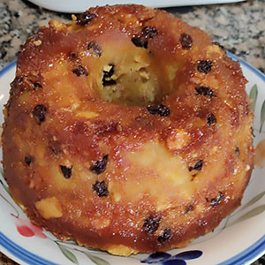
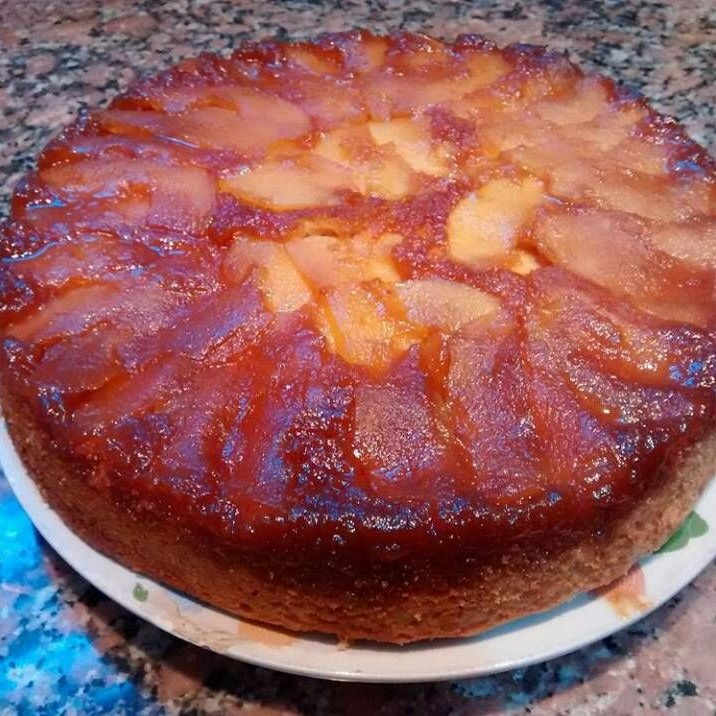

Budín de pan
Ingredientes
Para un molde de 18cm.
- 500 gr. de pan
- 400 gr. de azúcar
- 2 huevos
- 300 ml. de leche
- 150 gr. de pasas
- Opcional: esencia de vainilla y/o ralladura de limón
- Azúcar para caramelizar
Preparación
Poner azúcar en el molde hasta cubrir el fondo y llevar a fuego mínimo para caramelizar. Una vez disuelta, distribuir por todo el molde y dejar enfriar. En un bol colocar el pan trozado, el azúcar, la leche y los huevos. Trabajar la preparación hasta que el pan se humedezca y todos los ingredientes se unan. Agregar las pasas y volcar en el molde. Cocinar 30 minutos en horno bajo (150°C). Desmoldar en caliente.
Tarta invertida de manzanas
Ingredientes
Para un molde de 24cm.
- 2 manzanas (pueden ser rojas o verdes)
- 220 gr. de harina leudante
- 225 gr. de azúcar
- 2 huevos
- 240 ml. de leche
- 100 ml. de aceite
- Azúcar para caramelizar
- Manteca cantidad necesaria
Preparación
Poner azúcar en el molde hasta cubrir el fondo y llevar a fuego mínimo para caramelizar. Una vez disuelta, distribuir por todo el molde, dejar enfriar y luego untarlo con manteca. Cortar las manzanas en láminas y colocar sobre el caramelo enmantecado. Mezclar en un bol la harina, el azúcar, los huevos, la leche, el aceite y la vainilla. Colocar la preparación en el molde y cocinar en horno mínimo (140°C - 170°C) por 40 minutos. Desmoldar en caliente para evitar que el caramelo se pegue. Opcional: servir tibio acompañado de una bocha de helado.